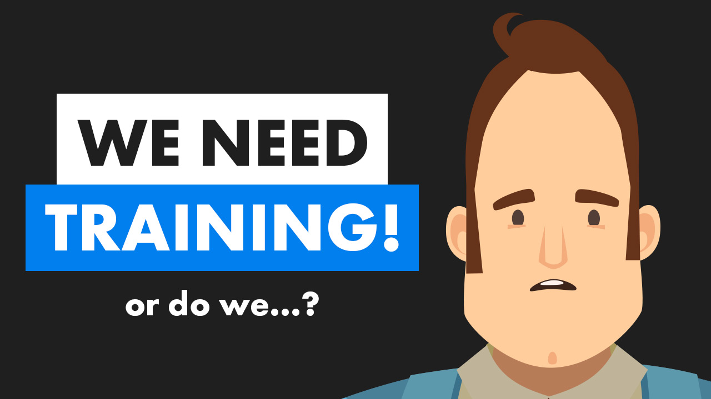
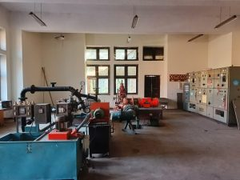
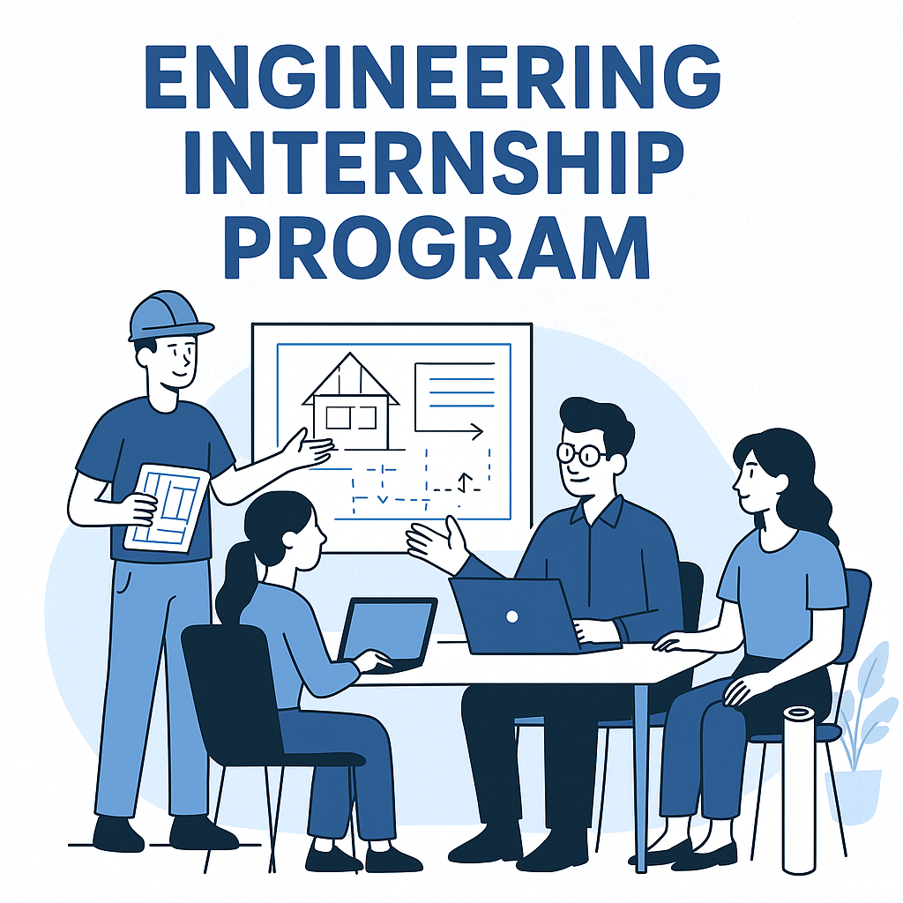
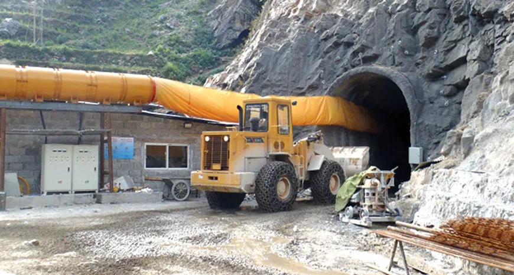
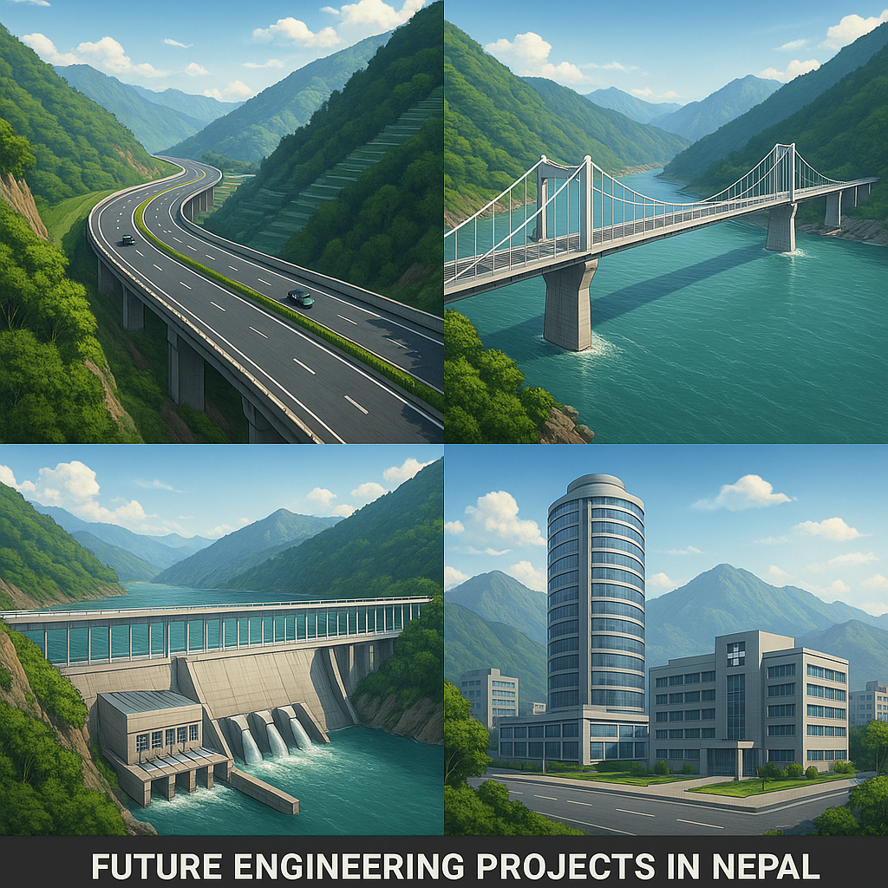

Introduction

Civil engineering stands as the backbone of Nepal's infrastructure development, yet the profession faces a critical decline in job opportunities, quality education, and industry support. Recent graduates frequently struggle to secure meaningful internships, resulting in insufficient practical experience that leaves them unprepared for the workforce.
The absence of structured training programs has created a troubling trend where young engineers are forced to seek employment in unrelated fields, wasting their specialized training and Nepal's investment in their education. This brain drain from the engineering sector comes at a time when Nepal faces urgent infrastructure challenges, from earthquake-resistant construction to sustainable urban development.
Major Challenges
1. Lack of Proper Internships and Practical Training
Most civil engineering students complete their degrees without substantial hands-on experience, severely limiting their employability in competitive job markets. Unlike medical students who benefit from teaching hospitals, engineering students often graduate having never worked on actual construction sites or infrastructure projects.
Nepal's current system lacks structured internship provisions, forcing students to rely on personal connections rather than merit-based placement programs. This is particularly problematic in specialized areas like:
- Earthquake-resistant construction techniques
- Hydropower infrastructure development
- Modern road construction in mountainous terrain
- Sustainable building materials and methods
2. Unemployment and Career Diversion
A typical construction site in Kathmandu showing both the potential and challenges of Nepal's construction sector
The scarcity of quality job openings has led to a mass exodus of engineering talent. Many civil engineering graduates reluctantly shift to unrelated professions such as banking, IT, or foreign employment in Gulf countries. This career diversion represents a tragic waste of specialized training and national resources.
The construction sector's stagnation stems from multiple factors:
3. Education and Industry Disconnect
University curricula remain heavily focused on theoretical knowledge, providing minimal exposure to modern engineering tools and technologies. Many engineering colleges still teach using decades-old textbooks while the industry has moved far ahead.
University lab equipment often lags behind current industry standards by 10-15 years
The outdated teaching methods fail to prepare graduates for real-world challenges like:
- Building Information Modeling (BIM) software
- Modern project management techniques
- Advanced materials testing protocols
- Sustainable construction practices
Measures to Revitalize Civil Engineering
1. Structured Internship and Training Programs
A collaborative effort between government, universities, and private firms could establish mandatory internship provisions for all engineering students. Successful models from countries like Germany and South Korea demonstrate how apprenticeship programs can dramatically improve employment outcomes.
Key components should include:
- Credit-bearing internship semesters
- Industry-mentored capstone projects
- Site supervision certification programs
- Public-private partnership initiatives
2. Job Creation and Sector Growth
The Melamchi Water Supply Project demonstrates the scale of infrastructure development Nepal requires
Strategic initiatives could stimulate engineering employment:
- Accelerated public infrastructure projects focusing on roads, bridges, and water systems
- Tax incentives for construction firms hiring fresh graduates
- Entrepreneurship programs for sustainable construction startups
- Foreign investment partnerships in large-scale development projects
3. Modernizing Education and Industry Integration
Curriculum reforms must emphasize practical applications of engineering principles, particularly in:
- Earthquake-resistant design and construction
- Green building technologies
- Hydropower engineering
- Transportation infrastructure
Industry integration could be enhanced through:
Conclusion
Nepal's civil engineering sector stands at a crossroads. Without structural reforms, the profession risks continued decline, leaving the country without the technical capacity to address its pressing infrastructure needs.
Planned infrastructure projects could revitalize Nepal's engineering sector if properly implemented
The path forward requires stronger internship provisions, modernized education, and expanded job opportunities. By implementing these measures, Nepal can transform its engineering sector into a driver of national development, ensuring graduates contribute effectively to building the nation's future.
Join the conversation: What reforms would you prioritize for Nepal's civil engineering sector? Share your perspectives and experiences in the comments below.